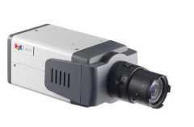

Потребликбез. Часть 2. Выбор IP-камеры.
Сегодня при выборе системы видеонаблюдения, заказчики все чаще останавливаются на IP-системах. Более того, тема IP-видеонаблюдения активно «пиарится» и продвигается всеми (ну, или почти всеми) участниками рынка. Так что самое время разобраться, на что же нужно обратить внимание при выборе сетевой камеры видеонаблюдения.
Давайте рассмотрим сокращенную таблицу характеристик одной из наиболее популярных камер на нашем сайте: TCM-4201
| Основные | |
|---|---|
| Тип матрицы | CMOS |
| Разрешение ( Mpx ) | 1.3 (SXGA) |
| Макс разрешение | 1280x960 |
| Вандалоустойчивое исполнение | да |
| ИК-подсветка | Да (до 30 метров) |
| Класс защиты корпуса | IP66 |
| Расширенный динамический диапазон | есть |
| Минимальная освещенность ( лк. ) | 0.01 Люкс F1.2, AGC вкл. 0.028 lux@F2.0, AGC вкл. |
| Поддержка PoE | есть |
| Видео | |
| Стандарт сжатия | MJPEG, MPEG-4, H.264, |
| Частота кадров | 25к/с |
| Multi-Streaming | два независимых потока |
1. Тип матрицы CCD или CMOS:
Если не говорить об экзотике типа тепловизорных камер, существует всего два типа матриц: CCD и CMOS (ониже ПЗС и КМОП). Не вдаваясь в дебри технических определений, можно сказать, что основное отличие этих типов состоит в том, что в CCD матрице каждый пиксель «пассивно» накапливает заряд под действием света, а в CMOS-матрице в паре с каждым пикселем работает свой «активный» компонент, преобразующий заряд чувствительного элемента в напряжение. Светочувствительность CCD матриц ощутимо выше, чем у матриц на основе CMOS, да и «шумят» они меньше. Однако прогресс не стоит на месте, за последние годы этот разрыв существенно сократился, и более дешевые CMOS матрицы уже почти догнали своих CCD соперниц. Именно поэтому подавляющее большинство современных IP камер, особенно камер высокого разрешения, созданы на базе CMOS. Тем не менее, практически все производители продолжают выпуск камер с CCD матрицами. Как правило, это камеры для работы в сложных условиях освещенности, распознавания номеров быстро движущихся автомобилей, скоростные камеры и т.д.
2. Разрешение
Разрешение ( в мегапикселях) и максимальное разрешение (размер в пикселях) видеоизображения. Эти два взаимосвязанных параметра определяют размер картинки, выдаваемой камерой. Теоретически, чем выше этот показатель, тем лучше, ведь картинка более высокого разрешения несет больше деталей, позволяет распознавать лица или номера автомобилей с бОльшего расстояния и т.д. Наиболее популярным на сегодняшний день является разрешение 1.3Mpx, что эквивалентно размеру картинки в 1280х1024 пикселей (1280х720 при широкоформатном отображении). Набирают популярность (пропорционально снижению цены) 2-мегапиксельные камеры формата FullHD (1920x1080).
3. Режим «день-ночь»
Режим «день-ночь»позволяет камере эффективно работать в условиях низкой освещенности. Механизм «день-ночь» может быть реализован программным способом или при помощи механического инфракрасного фильтра. В первом случае камера с наступлением темноты переходит в ЧБ режим иили включает функцию суммирования кадров, что позволяет существенно увеличить светочувствительность. Второй подход более сложен, но и более эффективен. Между объективом и матрицей камеры устанавливается подвижный ИК-фильтр, который механически вводится и выводится в зависимости тот режима работы. Как результат - отличная цветопередача днем и значительное увеличение чувствительности ночью (за счет расширения спектральной характеристики чувствительности матрицы). Безусловно такого электронно-механического компонента удорожает камеру.